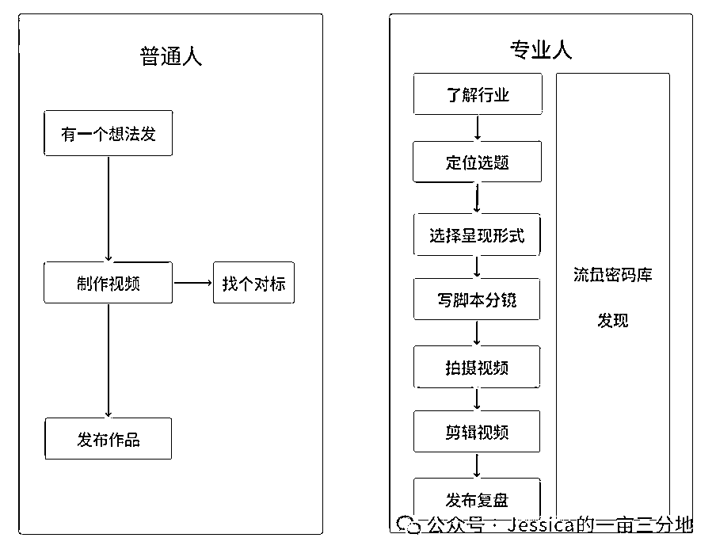

来源：https://gng5s0pcia.feishu.cn/docx/CUwBdWx1CodoxQxVaJ8cOxrbnPe
大家好，我是 Jessica，IP 孵化老手。MCN机构从业 9 年，曾就职于某细分垂类 top1 mcn 公司高管、某头部数字营销公司-直播电商部高管、两家MCN创始合伙人。孵化运营多个直播电商头部账号，孵化达人100+。
加入生财一年多了，一直都扮演个看客，趁着不忙，出来冒个泡，把年初立下的 flag 拔一拔。
今天给大家讲一个，80% 来咨询我的个人创作者目前都有的问题。帮大家提个醒、避个坑。
随着周鸿祎、雷军在互联网上的爆火，做个人 IP 、老板 IP 的概念已经被炒到随便拉出来一个人都能说上两句 怎么做了，堪比21 年的直播带货、23 年的 AI。
为了了解行业现状我已经听了不少于 20 个做号“老师”的课了，有些人确实分享了业内人真的在用的，很实用的方法和经验，但更多的是一些虚头巴脑的浮夸的“速成秘籍”（如果有想知道哪些老师的课能听的可以私信我鉴别）。许多想要做账号的小白也是东听一点，西学一些，大多数都是被别人给的“个别”成功案例所吸引，希望能通过“复制”就一夜爆红。
还有这种想法的，醒醒啦（超大声！！）其实这真的就是一个概率问题，有 1000 个人买，总能跑出来一个有点效果的，如果真的靠复制就能成功，他自己通过复制孵化达人赚钱不比这好？如果你真沉浸在别人造的空想世界里，那你不仅仅浪费了时间，更重要的，这些不靠谱的方法很可能会影响你对做账号这个事的理解，消磨了你的斗志，从而错过了一次机会。
我有一个客户就是这样，他是教培行业非常专业的一名老师，之前一直都是靠私域转化就不愁吃喝，但从去年开始私域的新客户来源不容乐观，不得不考虑公域拓展。做个人 IP 成了不得不做的事。刚开始他对短视频创作充满热情，买了很多老师的速成“秘籍”，方法论收获了一大堆，但是到自己做还是摸瞎。
“选题我是去找的网上有量的，也下钩子了，标题也是按照他们说的起的，内容也是去抄同行的爆款，为啥人家能成我就不行”他说。他开始陷入迷茫中，到后来开始怀疑自己做不了 IP，可是不做 IP 又没有更好的获客渠道。内耗，严重的内耗开始了。
我问他：“你做个人 IP 是为了获客？你想获得的客户是什么样的？你获客的目标是多少？那你为了获客这个目的做了什么动作？我的意思是在做 IP 的整体线路中为了这个目标你的具体动作，要细节性的”
他回答：“是的，我也不需要特别多，就一个月能转化 3、5 个客户就够了。客户就是想做这个事的人呀，我就拍视频呀，做公域不就是拍视频直播嘛，但是一直拍的不好所以没有人来问，问题还是在不会拍视频。看了好多方法也不管用”
很显然，他对做公域流量的事认识还很浅薄。我又问：“你要拍什么内容的视频？你觉得拍这种视频最重要的是什么？”
他回答：“我其实是想拍我自己想拍的专业知识的视频，但是没有量，一个老师让我找了几个对标去炒他们的爆款。视频最重要的就是下钩子吸引住用户看视频，我还是下的不好。”
很显然，他对做内容的理解也很浅薄。我继续问：“你抄他们是要抄他们的什么？他们的视频为啥有这么多的点赞你知道吗？”
他说了一堆在我看来都没说到点子上，后面他又说了好多从各种“大师”手里学到的方法，讲的头头是道，我觉得他都快赶上教他做视频的“大师”了。可有什么用呢？他连好的内容是什么样的，为什么好都说不出来，抄又能抄到什么呢？
对内容的理解不到位，没有自己的一条内容生产主线，有这样问题的人可不在少数。

你知道吗？一般专业的编导都是有一套通用或者说惯用的做号系统。在接到一个新的IP时，首先是会用通用系统来测内容以及了解 IP。
以创始人IP为例，对于从 0 开始做的 IP 来说，我们采用的通用系统之一的就是采访。而这个通用系统的应用核心目的不是为了出爆款，而是为了锻炼 IP 的镜头表现力以及360 度的了解他。
了解的目的就是识别出他身上有“量”的点，从而测试合适的表现形式和流量玩法，最终形成一条 IP 自己独有的内容生产系统，只有这样才能保持持续稳定的内容输出能力，之后就是不断的找用户痛点策划选题，爆款就是时间的问题了。
了解内容给大家贴出来，大家可以直接用：
到这里不知道大家有没有感受到，形成一条自己的内容生产系统，这才是新手要去探索和学习的，不是一个个分散的点，是通过一条线，你要去找组成这条线的最合适的点。
当然一条系统不会永远有量，我们会实时观测数据来“嗅”到他的生命周期，在顶点过后就会在原来的系统上做迭代和升级，或者开始筹备第二曲线。
听到这里你以为就获得了获取流量的“尚方宝剑”了吗？那你可能还是没打破“学了好像有没学到”怪圈。上面说的只是系统逻辑，一定要落到实操上，两个定很重要：一、对有“量”内容的识别能力。二、组成线的关键点——做号的具体环节和方法。
对内容的识别能力这个非常重要，我发现大部分人做内容就是在盲人摸象，想要做好一个事，首先你要想办法去搞清楚他是个什么，应该是什么样的。
有很多老师让大家抄同行爆款，这个做法说对也多，说不对也不对，这要看怎么抄。刚开始做对内容的认知不足，去“抄”别人的东西是快速建立对内容认知能力的有效方法。但重点是，你抄别人是为了建立对内容的认知。
如果你的抄就是按照人家内容结构甚至制作方法，简单换成你，过手不过脑，这样的抄就没什么意义。如果你是分析人家成功的主要因素，去“抄”这些主要因素，然后尝试怎么和自己做结合，那这样的“抄”就是有意义的。
做号的具体环节和方法是实操方面的，这块最重要的就是对系统上每一个点细节的把控。涉及到这点有非常多的实操性知识点，这期不做具体分析，感兴趣的话我再出一期专门讲。
最后透露个小秘密！专业做内容的人看视频不单单是在看视频，同时也是在找别人视频中好的元素点，看看自己有没有什么可取之处。他们眼里的视频是选题、文案、人物表现、人设、画面、剪辑等所有组成视频的元素点，俗称拆片、拆号，这个也是“大师”做号方法论的主要来源。
去按照系统线的逻辑去找适合你的点吧，一旦形成固定搭配，产出效率会大大提升，流量也会相对稳定。这个过程不难。一套正确的系统性方法论 + 实操练习 + 试错复盘。
希望你在 IP 的道路上，越走越顺，加油！